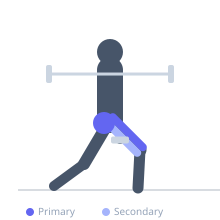
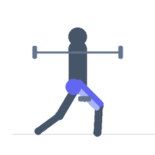

Exercise guide / Smith Machine Bulgarian Split Squat
Smith Machine Bulgarian Split Squat
The Smith machine Bulgarian split squat replicates the standard dumbbell or barbell Bulgarian split squat using the guided bar of the Smith machine. The fixed bar path reduces the balance demands and allows the lifter to focus on depth and muscular feel rather than stability. The rear foot is elevated on a bench behind, and the front leg does the primary work.
Primary muscles
rectus femoris
vastus lateralis
vastus medialis
gluteus maximus
Secondary muscles
biceps femoris long head
iliacus
Stabilizers
gluteus medius
erector spinae
Equipment
Smith Machine
Adjustable Bench (Incline / Decline)


Starting position
- Set the Smith machine bar at shoulder height. Position a bench behind you. Place one foot on the bench (top of foot or heel, depending on comfort). Position the front foot forward so the front shin will be vertical at the bottom.
Setup
- Adjust the Smith machine bar to sit across the traps. Place a flat or adjustable bench 2-3 feet behind the machine's path. Set rear foot on bench before unracking.
Steps
- Step 1: Brace the core and keep an upright torso.
- Step 2: Lower the rear knee directly down toward the floor.
- Step 3: Descend until the front thigh is at or below parallel. Front shin should remain nearly vertical.
- Step 4: Drive through the front heel to extend back to the starting position.
Coaching cues
- Front shin stays vertical
- Drive the rear knee straight down
- Upright chest
Breathing
- Inhale on the descent, exhale on the drive.
Range of motion
- Front thigh at or below parallel. Rear knee close to floor.
Tempo
- 3-0-1-0
Common mistakes
- Front foot too close, causing excessive forward shin angle
- Rear knee drifting to one side
- Leaning the torso too far forward
Safety
- The rear foot on the bench creates instability — set up carefully and test before loading
- The Smith machine's fixed path may feel unnatural for some — adjust foot position accordingly
Training
- strength: 5–8 reps
- hypertrophy: 8–15 reps
- strength: 3–4 sets
- hypertrophy: 3–4 sets
- Rest: {'strength': 120, 'hypertrophy': 90}